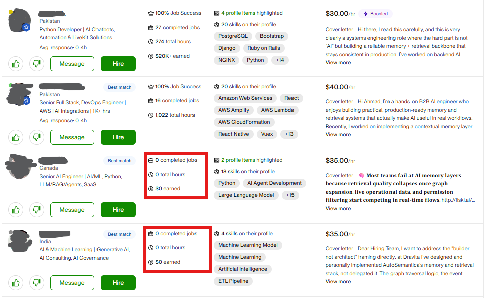
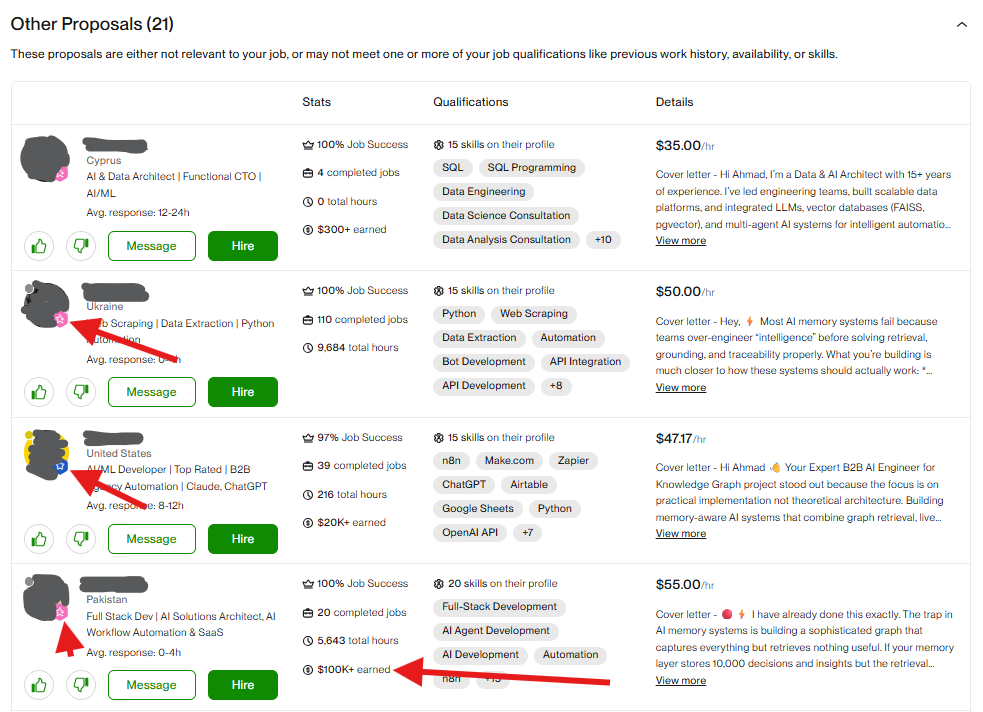

Upwork
in 2026

In 2026, Upwork is not the same platform most freelancers learned on. A new AI layer called Uma now filters, scores, and summarises every proposal before a buyer ever sees it. Most freelancers are still using 2022 strategies on a 2026 platform... wondering why nothing is working.
We wanted real answers. So we posted 50 real jobs on the buyer side, spent $500+ in Claude Code research credits, and reviewed every single proposal that came in, 3,147 in total. We tracked who ranked where, who got buried in the hidden Other bucket, and what actually separated the visible profiles from the invisible ones.

By the end of this book: you'll know exactly how the algorithm classifies your profile, what signals it uses to rank you, and what a page-one profile looks like, with a step-by-step rebuild plan to get there.
First, Understand How the Buyer Actually Thinks
Most freelancers imagine a buyer patiently reading every proposal. That is not what happens. A buyer posts a job, gets flooded with proposals within hours, and starts feeling overwhelmed, not lucky. By the time they open the proposal list, they're already looking for a reason to stop reading, not a reason to keep going.
- Buyer writes the job post manually
- Buyer reads proposals top to bottom
- Best cover letter usually won
- Reputation and reviews dominated
- Uma drafts the job post in seconds from 1-2 sentences
- Uma sorts, scores, and hides proposals automatically
- Buyer is pushed straight to an Invite Freelancers flow
- Profile relevance now dominates over cover letters
Immediately after posting, the buyer is nudged to invite specific freelancers. Many hire directly from that invite pool, without ever opening the proposal list. Visibility in search is now a completely separate game from proposal ranking.
Upwork is not just ranking freelancers. It is defending the buyer's attention. The Other bucket, Best Match tier, Uma summaries, auto-hide filter... all of it is Upwork protecting the buyer's time. Once you understand that, every part of the system makes sense.
There's a New "Hidden" Folder Where Your Proposals Go
If your proposal isn't getting views, it may be sitting in a section called Other Proposals, a hidden bucket the buyer has to actively seek out. Upwork won't tell you. There's no notification, no warning. Your proposal just disappears.
Buyer opens the proposal page
They see Boosted slots (up to 4), then Best Match candidates, then the full visible organic list, sometimes 40-60 freelancers deep.
Buyer scrolls through all visible proposals
Most buyers scan only the first 10-20. The further down, the less likely anyone reads it.
At the very bottom: a small "View more results" link
Easy to miss. Nothing about it signals importance. Most buyers never reach it.
Click it → the Other bucket opens
Only now do hidden proposals appear. By this point, most buyers have already messaged or shortlisted someone from the visible list.

In our research, fewer than 1 in 10 buyers ever opened the Other bucket. Of those who did, most opened only a handful of profiles. Being in Other is not the same as ranking low. It is closer to not applying at all.
An AI Is Reading Your Profile Before Any Human Does
Uma, Upwork's AI, generates a work history summary and highlights the skills it considers most relevant to the job, before the buyer opens your profile. What Uma highlights is what the buyer sees first. If your key skills aren't highlighted, you're invisible before anyone reads a word you wrote.

Five terms to know
95% of Hidden Profiles Already Had a Badge
The Other bucket is not where bad freelancers end up. We looked at every hidden profile across all 50 jobs. What we found was uncomfortable.
| Badge Level | Found in Other Bucket |
|---|---|
| Top Rated Plus | ~55% |
| Top Rated | ~30% |
| Rising Talent | ~10% |
| No Badge | ~5% |
Not "Is this person good?"... but "Is this person the right kind of good for this exact job?" A Top Rated Plus profile applying to the wrong category loses to a Rising Talent profile with clean, specific alignment every single time.
The Best Cover Letter on a Mismatched Profile? Still Invisible.
On one WordPress development job we reviewed, the strongest cover letter in the entire Other bucket named WooCommerce, PHP custom checkout, and performance optimization by name. More detailed than anything in the visible list. But the profile behind it had a broad title, unfocused skills, and no clear WordPress work history. The system read the profile first. Profile failed the gate. Cover letter never got a fair chance.
Average cover letter. But title, skills, and past jobs all pointed to the right category. System had high confidence. Passed the gate.
Brilliant cover letter. But broad title, scattered skills, and no relevant work history. Low profile confidence. Went straight to Other.
Upwork reads your profile before the buyer reads your cover letter. Fix the profile first. The cover letter is an amplifier, not a rescue tool.
Every Proposal Passes Through Three Questions Before Any Human Sees It
| # | What the system is deciding | Stage |
|---|---|---|
| 1 | Does this freelancer belong on this job at all? | Visibility Gate |
| 2 | Among those who passed, who ranks highest on page one? | Ranking |
| 3 | When the buyer opens the profile, does it feel safe to hire? | Trust Floor |
All the energy goes into Stage 3: reviews, earnings, portfolio presentation. But the system eliminates most profiles at Stage 1 before the buyer is ever involved. Fix Stage 1 first.
Where Does Your Score Put You?
| Net Score (after caps and penalties) | Where you likely land |
|---|---|
| 88-100 | Strong Best Match candidate |
| 80-87 | Best Match eligible / top of Organic |
| 68-79 | First-page Organic. Reliably visible. |
| 55-67 | Visible but fragile. One contradiction can cost you. |
| 40-54 | Other border. Inconsistent visibility. |
| Under 40 | Other likely. Profile classification is broken. |
Your Visibility Score Is Built From Three Signal Clusters: Here's the Full Breakdown
Every signal either helps you, does nothing, or hurts you. The tables below show the maximum positive contribution from each signal when fully matched. A mismatch earns zero or becomes a penalty.
Cluster 1: Profile Identity Signals max +36 pts
| Signal | Max Points |
|---|---|
| Exact job-keyword in profile title | +7 |
| Exact tool or problem keyword in title | +5 |
| No conflicting identity in title | +5 |
| Main skills include the job's tags | +8 |
| Focused skill stack (not scattered) | +4 |
| AI-highlighted relevant skills match the job | +7 |
| Cluster Maximum | +36 |
Cluster 2: Proof Layer Signals max +43 pts
| Signal | Max Points |
|---|---|
| Most Relevant Jobs surfaced by Upwork for this posting | +9 |
| Highlighted skill chips inside those relevant jobs | +8 |
| Past job semantic similarity to the job post | +7 |
| Proposal-selected highlights directly relevant | +7 |
| Relevant portfolio projects exist | +6 |
| Portfolio tags highlighted as relevant to the job | +6 |
| Cluster Maximum | +43 |
Most Relevant Jobs (+9) and highlighted skill chips inside them (+8) are the highest-weight signals in the model. Most freelancers have never checked which jobs Upwork is surfacing for them, or what skill tags appear inside those jobs. This is the biggest gap between what matters and what people actually do.
Cluster 3: Proposal, Trust + Penalties max +23 pts
| Signal | Max Points |
|---|---|
| Uma work history summary matches the job | +5 |
| Cover letter first screen matches job vocabulary | +5 |
| Cover letter has specific implementation detail | +5 |
| Trust floor acceptable (JSS, major badge) | +3 |
| Response time and recent activity | +2 |
| Rising Talent lift (newer profiles) | +2 |
| Rate and buyer-fit reasonable for budget | +1 |
| Cluster Maximum | +23 |
| Penalty Trigger | Score Range |
|---|---|
| Off-category title or skill stack vs. the job | −12 to −25 |
| Agency or company framing on individual-contractor job | −8 to −18 |
| No buyer-visible proof matching the category | −8 to −15 |
| Profile and proposal tell contradicting stories | −7 to −15 |
| Template or keyword-stuffed proposal | −3 to −10 |
Seven Conditions That Put a Hard Ceiling on Your Score, Even if Everything Else Looks Good
Even a strong raw score can be limited by a cap condition, something critical that's missing or contradicting. Caps prevent over-ranking a profile that only matches part of what a job needs.
| Condition | Score Ceiling |
|---|---|
| One major job-category cluster missing | 74 max |
| Two major clusters missing | 55 max |
| Exact title but weak or absent proof layer | 60-68 max |
| Strong cover letter but mismatched profile | 55-65 max |
| Off-category profile identity | 45-55 max |
| Agency or team profile on a direct-builder job | 60 max |
| No buyer-visible proof for the category | 58 max |
Run the three scoring clusters honestly for your profile against a specific job. Add up the max you can claim. Then check for caps. Your real ceiling is almost always lower than the raw total... because most profiles have at least one missing cluster or one contradiction working against them. Find your cap first. That is where to focus.
Four Cases From Our Data That Explain How the Algorithm Thinks
These anomalies are the most useful part of the research. We built the model by asking: what would have to be true for these weird rankings to make sense?
A Top Rated Plus profile lands in Other
What we learned: Reputation is not the first gate. Something in the relevance classification was broken. The badge did not save it.
A Rising Talent profile ranks near the top of Best Match
What we learned: Strong relevance beats weak history. Clean narrow identity, one directly relevant past job, portfolio tags that matched the job exactly.
A $200K+ earner ranks lower than a niche specialist with a fraction of their earnings
What we learned: Broad authority loses to narrow fit. Every time.
An exact-title profile is still pushed to Other
What we learned: Title alone is not enough. The title matched but the skills, portfolio, and highlights did not back it up. Repeated proof matters more than one keyword.

Nine Rules for Page-One Visibility: Built Directly From the Data
Stop being broadly impressive. Be obviously right for one job.
Use this formula: Role + Exact Niche + Core Tools + Buyer Outcome. A broad title is always weaker than a narrow one that matches the buyer's exact need.
Make the first profile line mirror the buyer's problem, not your biography
Not "I am passionate about development." What specific problem do you solve? That is what the first line should answer.
Organise your skills like ranking signals, not a resume dump
Top skills should use exact vocabulary from the jobs you want to rank for. Remove anything that pulls you into the wrong category.
Build portfolio items for ranking, not just presentation
Title, description, and tags should use the same vocabulary as target job posts. Vague portfolio titles ("AI Project") score near zero. Specific ones score high.
Treat past jobs as evidence clusters, pick the right ones to highlight
You can't rewrite past job descriptions. But you can choose which jobs to select as proposal highlights. Always pick the most relevant job, not your highest-earning one.
Write cover letters after the profile is already aligned, not before
A cover letter that contradicts your profile signals confusion, not confidence. Write it after the profile already looks relevant.
Use trust signals as support, not as the whole strategy
JSS, Top Rated, and earnings are tie-breakers after relevance. Relevance always comes first.
Apply early, but fast and generic is still generic
First 20 minutes can matter in competitive categories. The winning move is fast plus relevant, not fast alone.
Agencies and software houses need sharper entry points per service, not a single "we do everything" profile
Agency profiles often lose because the founder profile is too broad. The fix is sharper category-specific positioning, not a longer list of services.
Most Pakistani freelancers are excellent at delivery but weak at packaging. Three common mistakes: (1) Broad title: "Full Stack Developer" or "Software House" tells Uma nothing specific. (2) Pricing panic: lowering the rate when views drop doesn't fix a relevance mismatch. (3) Polished AI English, smooth generic prose beats simple English with exact nouns and a practical plan. Every time.
Your Pre-Application Checklist + 7-Day Rebuild Plan
Run this checklist before every application. If any item is not true, you may still apply, but don't blame the algorithm when you disappear.
-
My title contains the exact job niche
Not a broad role. The specific service the buyer is buying. -
My first profile line mirrors the buyer's problem
Not "I am passionate about..."... the specific problem this job posts to solve. -
My top skills match this job post's exact vocabulary
Exact keywords from the job appear in your top 3-5 skills. -
My portfolio has at least one project matching this job
Title, description, and tags use the same vocabulary as the job post. -
My selected highlight is my most relevant job, not my biggest one
Relevance to this specific job. Not total earnings or most impressive name. -
My cover letter names the exact stack and explains a practical first step
Exact tools, one relevant example, first implementation steps, all screening questions answered.
Fix profile classification (Days 1-5) before increasing proposal volume (Days 6-7). Sending more proposals on a misclassified profile just wastes connects faster.
Audit your title and first line against 3-5 target jobs
Does your title use their exact niche keyword? Rewrite both if not.
Rebuild your skills list
Remove skills that pull you into the wrong category. Add exact keywords from target job posts. Most relevant skills at the top.
Retitle and retag your top 3-5 portfolio items
Vague titles become specific keyword-rich titles. Tags use exact vocabulary from target jobs.
Identify your most relevant past Upwork jobs
Pick 2-3 completed jobs closest to your target category. Ensure skill tags are accurate. Set up as proposal highlights.
Rewrite your profile overview opening paragraph
Replace biography or generic intro with a problem-first opening. Use exact terminology. Name the type of client and the specific outcome you deliver.
Apply to 3-5 targeted jobs using the checklist above
This is a test batch. You are measuring whether the profile changes are working, not going for volume yet.
Review results and decide what to adjust
Check proposal views across the batch. Use the pattern below to diagnose.
Views improved but replies stayed weak
The visibility gate improved. You're being seen now. The problem has shifted to offer and proposal quality: rate, cover letter, or proof may need work.
Views stayed dead
Profile may still be misclassified for these specific jobs. Go back to Day 1 and recheck title and skills against the exact jobs you applied to.
Both views and replies improved
Profile classification and proposal proof are moving in the right direction. Continue in the same category. Let the pattern stabilise over 10-15 applications before changing anything major.
The freelancers who win page-one visibility are not always the biggest profiles. They are the clearest ones. Upwork rewards the profile whose title, skills, history, portfolio, and proposal all tell the same story: "I am exactly the kind of person this job is asking for."
Sources Checked
Public Upwork sources used for platform-change context only. The scoring model is based entirely on buyer-side manual research and should be treated as a working model, not an official Upwork formula.
Upwork Updates Spring 2026
Uma-powered innovations: work history summaries, Uma Recruiter shortlisting, redesigned marketplace experience.
investors.upwork.com/news-releases/…/upwork-updates-spring-2026
Uma, Upwork's Mindful AI
Official Uma product page covering AI-assisted job posting, candidate matching, and work history summaries.
upwork.com/uma
How to Use Uma to Search for Freelancers
Buyer-side Uma freelancer search functionality.
support.upwork.com/hc/en-us/articles/45809718947859
Boosted Profile and Boosted Proposal
Official documentation for paid placement mechanics.
support.upwork.com: Boost your profile / How to boost a proposal
Upwork Updates Summer 2025
75+ AI-driven innovations, Uma powering a majority of new client job posts.
investors.upwork.com/news-releases/…/upwork-evolves-uma-ai
Disclaimer: This playbook is based on independent buyer-side research conducted in April and May 2026. Not affiliated with, endorsed by, or produced in partnership with Upwork Technologies, Inc. All observations represent the researchers' working model. Upwork's algorithms change. Treat this as a map, not a guarantee.
They are the clearest ones.